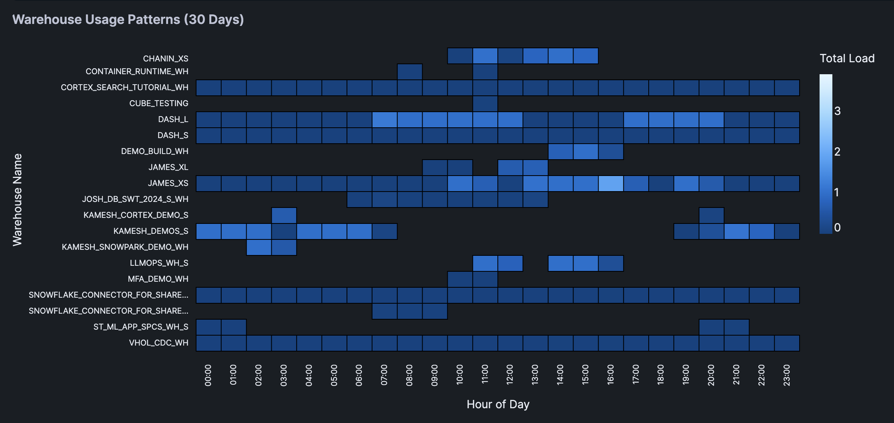

Learn how to create an interactive visualization tool that helps you analyze (and optimize) your Snowflake warehouse usage patterns. Using Snowflake Notebooks with Streamlit, you'll build a heatmap dashboard that reveals peak usage hours and potential cost optimization opportunities.
What You'll Learn
- How to query warehouse utilization data from Snowflake
- Creating interactive widgets with Streamlit
- Building heatmap visualizations using Altair
What You'll Build
An interactive dashboard featuring a heatmap visualization of warehouse usage patterns across different hours of the day, thereby helping to identify peak usage times and opportunities for optimization.
What You'll Need
- Access to a Snowflake account
- Basic familiarity with SQL and Python
- Understanding of Snowflake warehouses
Firstly, to follow along with this quickstart, you can click on Warehouse_Utilization_with_Streamlit.ipynb to download the Notebook from GitHub.
Notebooks comes pre-installed with common Python libraries for data science and machine learning, including numpy, pandas, matplotlib, and more! For this particular use case, there's no further library to add to the working environment. If you need additional packages, use the Packages dropdown on the top right to add them to your notebook.
Write the Query
First, we'll query the warehouse utilization data available from SNOWFLAKE.ACCOUNT_USAGE.WAREHOUSE_LOAD_HISTORY:
SELECT
DATE(start_time) AS usage_date,
HOUR(start_time) AS hour_of_day,
warehouse_name,
avg_running,
avg_queued_load,
start_time,
end_time
FROM snowflake.account_usage.warehouse_load_history
WHERE start_time >= DATEADD(month, -1, CURRENT_TIMESTAMP())
ORDER BY warehouse_name, start_time;
Note: The above SQL cell is named sql_warehouse_data.
Converting to DataFrame
Convert the above SQL results to a Pandas DataFrame:
sql_warehouse_data.to_pandas()
The retrieved data looks like the following:
Note: The above Python cell is named py_dataframe.

Build the Slider Widget
Let's create an interactive slider using Streamlit. This would allow users to select the number of days to analyze, which would filter the DataFrame.
Finally, we'll calculate the total warehouse load (TOTAL_LOAD) and format the hour display (HOUR_DISPLAY) for each record.
import pandas as pd
import streamlit as st
# Get data
df = py_dataframe.copy()
# Create date filter slider
days = st.slider('Select number of days to analyze',
min_value=10,
max_value=90,
value=30,
step=10)
# Filter data based on selected days and create a copy
latest_date = pd.to_datetime(df['USAGE_DATE']).max()
cutoff_date = latest_date - pd.Timedelta(days=days)
filtered_df = df[pd.to_datetime(df['USAGE_DATE']) > cutoff_date].copy()
# Prepare data and create heatmap
filtered_df['TOTAL_LOAD'] = filtered_df['AVG_RUNNING'] + filtered_df['AVG_QUEUED_LOAD']
filtered_df['HOUR_DISPLAY'] = filtered_df['HOUR_OF_DAY'].apply(lambda x: f"{x:02d}:00")
st.warning(f"You've selected {days} days to analyze!")
filtered_df
The interactive interface that we've created using Streamlit is shown below along with the filtered DataFrame:

Create the Heatmap
Finally, we're creating a heatmap using Altair.
The heatmap shows the warehouse usage pattern across different hours of the day. Color intensity represents the total load and interactive tooltips showing detailed metrics for each cell.
import altair as alt
import streamlit as st
chart = alt.Chart(filtered_df).mark_rect(
stroke='black',
strokeWidth=1
).encode(
x=alt.X('HOUR_DISPLAY:O',
title='Hour of Day',
axis=alt.Axis(
labels=True,
tickMinStep=1,
labelOverlap=False
)),
y=alt.Y('WAREHOUSE_NAME:N',
title='Warehouse Name',
axis=alt.Axis(
labels=True,
labelLimit=200,
tickMinStep=1,
labelOverlap=False,
labelPadding=10
)),
color=alt.Color('TOTAL_LOAD:Q', title='Total Load'),
tooltip=['WAREHOUSE_NAME', 'HOUR_DISPLAY', 'TOTAL_LOAD',
'AVG_RUNNING', 'AVG_QUEUED_LOAD']
).properties(
title=f'Warehouse Usage Patterns ({days} Days)'
).configure_view(
stroke=None,
continuousHeight=400
).configure_axis(
labelFontSize=10
)
# Display the chart
st.altair_chart(chart, use_container_width=True)
Here's the heatmap displaying the warehouse usage patterns:

Congratulations! You've successfully built an interactive warehouse utilization app that helps to identify usage patterns and optimization opportunities. This tool will help you make data-driven decisions about warehouse sizing and scheduling.
What You Learned
- Queried warehouse utilization data from Snowflake
- Built an interactive interface with Streamlit
- Created an informative heatmap visualizations
- Analyzed warehouse usage patterns
Related Resources
Articles:
Documentation:
Happy coding!